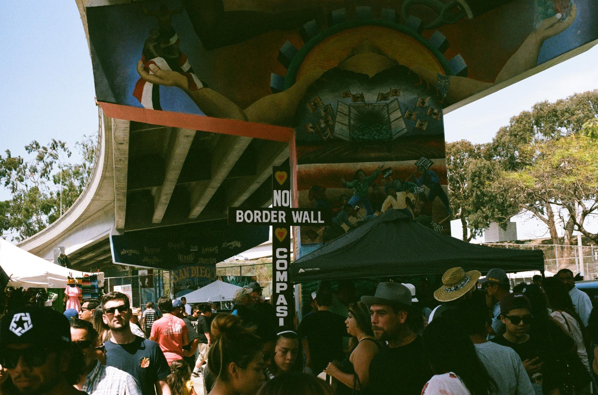

Summary: In the contemporary political climate, policy, mental health, and cultural identity collide. In Barrio Logan, an area with a predominantly Chicano population, community members are outspoken against policies that target them.

“There are levels to the problems that affect this community,” says Benjamin, a leader of the Barrio-Logan based political organization Union Del Barrio. Behind him hangs a shirt with “Stolen Land” written across the California Bear Flag, and it ripples as he explains the past and present of the sociopolitical issues in Barrio Logan. Everything affects everything else, he emphasizes, and the intricacy of the issues makes them more difficult to address. As a consequence of these levels of political, environmental and public planning concerns that this community has dealt with for decades now, there is another issue that is both exacerbated and overlooked: mental health.
Union del Barrio has been an ongoing, organized struggle for the rights of the Chicano population in Barrio Logan since 1981. What the name comes from, Benjamin says, is the need “to build a community that is organized, that is conscious, that is resisting.” In response to the efforts against the Chicano Park Movement in the 1970s, organizers strove to organize for the rights of their people in the land that was their home, but was no longer being recognized as such. Following the election of Donald Trump, hundreds took to the streets and to Chicano Park to protest. It has been thirty years, but to them, the struggle hasn’t diminished at all-- it has merely changed face.

Mental health issues tend to affect the immigrant population more than others, and they tend to affect the Latino population (especially first-generation children) more than other immigrants. Studies exploring this have shown that the stigma attached to psychiatric disorders tends to be significantly more prevalent in Latinos and other ethnic groups (Alvidrez, 1999). There is a significant cultural stigma in the Chicano community that prevents individuals from seeking help when they need it. Many Latinos will seek help for their mental health difficulties from a general or family physician in order to eliminate the effects of the stigma of seeing a psychologist (Gonzalez, 1997).
The fears that emerged from the reality of a Donald Trump presidency have the potential to exacerbate these issue of mental health disorders. The fear of deportation has always precluded many individuals in Latino communities like Barrio Logan from seeking help, but previously, seeking healthcare for a child who was a US citizen used to alleviate some of these fears. This is increasingly no longer the case. With deportation fears also causing women to drop their domestic abuse cases, PTSD from incidents of domestic abuse are also going unaddressed.
The issue of mental health care for the Chicano community in Barrio Logan is being affected by Trump in two ways: first, the exacerbation of fears and anxiety that contribute to mental health disorders but the second rising concern is the threat of losing funding to mental health resources with the policy introductions like the new Republican healthcare bill. “You have pharmaceutical companies pushing their drugs on our communities in an effort to cure the symptoms and not the illness or disease,” Benjamin asserts. “Our access to healthcare is in the very late stages, it’s not one of preventative health care.”
When asked what he would like to see the larger San Diego community do, he says, “We expect nothing from anyone but our community.” This self-reliance has been instrumental to the evolution of organizations like Union del Barrio. The current political climate that this community is affected by however, affects all our communities. They speak from the fabric of our nation, our political and social identities. To fight for each other’s rights is to fight for our own.